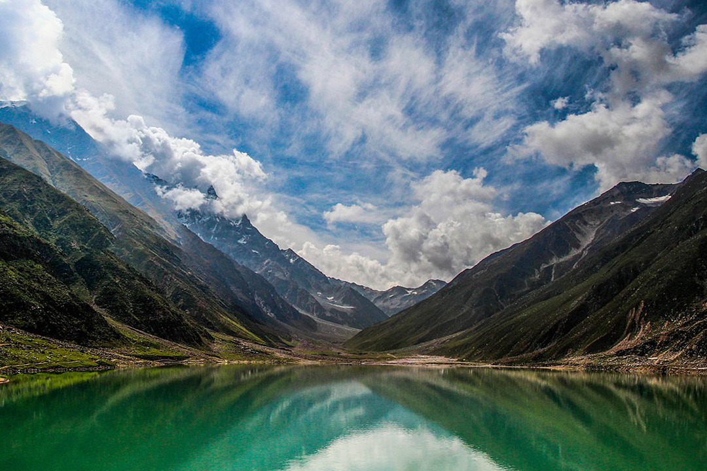

|
Naran:
|
Naran is a popular tourist destination located in the Kaghan Valley of the Khyber Pakhtunkhwa province of Pakistan. It is situated at an altitude of approximately 2,500 meters (8,202 feet) above sea level. Naran is known for its stunning natural beauty, picturesque landscapes, and pleasant weather, making it a sought-after location for nature lovers and adventure enthusiasts. Naran is surrounded by majestic mountains, lush green meadows, and crystal-clear lakes. The area is known for its breathtaking views, particularly during the summer season when the valleys are adorned with colorful flowers and flowing rivers. One of the major attractions near Naran is Lake Saif-ul-Malook, a pristine alpine lake known for its clear blue waters and stunning reflections of the surrounding mountains. Visitors can enjoy boating and fishing in the lake while taking in the scenic beauty. The region offers various outdoor activities and adventure opportunities. Tourists can go hiking, trekking, and mountaineering in the nearby mountains, with popular destinations including Babusar Pass, Lalazar, and Siri Paye Meadows. Jeep safaris and camping trips are also popular among visitors. Naran serves as a base for exploring the Kaghan Valley, which is known for its natural wonders and charming villages. The valley is home to several other picturesque lakes, such as Lulusar Lake and Dudipatsar Lake, each with its own unique appeal. The town of Naran itself offers a range of accommodations, including hotels, guesthouses, and camping sites, to cater to the needs of visitors. Local markets and bazaars provide opportunities to purchase traditional handicrafts, souvenirs, and local cuisine. It's important to note that Naran is a seasonal destination, with its peak tourist season being from May to September when the weather is most favorable. During this time, the area experiences a significant influx of tourists from within Pakistan and abroad. |
 |